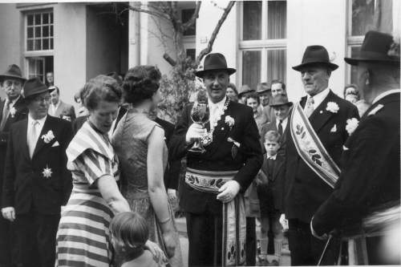
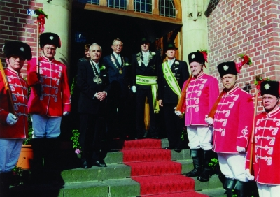

Auf diesem Bild aus dem Jahre 1886 befinden sich die Präsidenten Wilhelm Martens, Aloys Opwis, Wilhelm van den Wyenbergh, die Festkettenträger Anton
Janson und Heinrich Paes, sowie die Mitglieder Josef Iding und Gerhard Aengenheyster.
Die Zeit bis 1914
Ab 1882 wurde alljährlich das Preis- und Königsschießen durchgeführt, zunächst nur als Preisschießen, ab 1884 ging es auch um die Königswürde. Ferdinand
Gossens landete den Haupttreffer und wurde somit erster König der Gesellschaft. Das Königsschießen hatte seitdem im Vereinsleben, das im Besonderen der
Pflege der Geselligkeit gewidmet war, eine herausragende Bedeutung. 1886 ging aus den Reihen der Bürgerschützen der Männer-Gesang-Verein „Sängerbund“
hervor. Durch den Gesang sollte ein weiteres Mittel zur Pflege der Geselligkeit und die würdige Ausgestaltung der Vereinsfeiern bewirkt werden.
1906 - 25-jähriges Jubiläum der Bürger-Schützen Gesellschaft
Als Wilhelm Martens aus beruflichen Gründen im November 1900 Kevelaer verließ, wurde Aloys Opwis neuer Präsident. Im Jahre 1905 wurde die Vogelstange aus
verschiedenen Gründen von Schravelen auf Kevelaerer Gebiet verlegt. Bürgerschützen errichteten gemeinsam mit den St. Sebastianus-Schützen den Schießstand
bei Scholten an der Twistedener Straße. 25 Jahre nach der Gründung, im Jahre 1906, wurde das erste Jubiläum in glanzvoller Weise gefeiert.
Josef Plümpe, seit langen Jahren Hauptmann der Gesellschaft, errang die Königswürde. Im selben Jahr mussten sich die Bürgerschützen, als die Inhaberin des
Lokals „Ossekopp“ starb, nach einem neuen Vereinslokal umsehen. Es folgte der Wechsel zum Hotel „Zum goldenen Apfel“, seitdem und bis heute, also jetzt
seit 100 Jahre, das Vereinslokal der Bürgerschützen. Als 1906 Aloys Opwis sein Amt niederlegte, wurde er zum Ehrenpräsidenten und Franz Wilhelm van den
Wyenbergh zu seinem Nachfolger gewählt.
Franz Wilhelm van den Weyenbergh - Präsident von 1906 bis 1913
1908 waren es die Bürgerschützen, die bei der gemeinsamen Kirmesfeier, die in diesem Jahr zum ersten Mal stattfand, mit dem amtierenden Schützenkönig,
dem Bäckermeister Anton Janson, den ersten Festkettenträger stellte. Bürgermeister Marx hatte eine gemeinschaftliche Kirmesfeier und ein Volksfest
vorgeschlagen und die Mitwirkung der Gemeindevertretung zugesagt. So kam es in diesem Jahr zum Zusammenschluss der Geselligen Vereine Kevelaers.
Anton Janson - Festkettenträger 1908
Am 9. November 1913 trat Franz Wilhelm van den Wyenbergh von seinem Amt als Präsident zurück und der Architekt Mauritz Hoymann führte seitdem die
Gesellschaft. Franz Wilhelm van den Wyenbergh wurde zum zweiten Ehrenpräsidenten gewählt. Nur ein Jahr konnte der neue Präsident sein Amt ausüben.
Als 1914 der erste Weltkrieg ausbrach, mussten mit ihm 20 Vereinsmitglieder an die Front. Acht Bürgerschützen kamen aus dem Kriegsgeschehen nicht mehr
zurück, unter ihnen auch der Präsident.
Mauritz Hoymann - Präsident von 1913 bis 1914
Buschpartie bei Kattelans
v.li.n.r.: Paul Tebartz, Leo Peters, Fritz van Betteraey jr., Paul Opwis, Fritz van Betteraey sen., Josef Aengenheyster und Fritz Cleve
Der Wiederaufbau nach dem Krieg
Die erste Versammlung nach dem Krieg fand am 11.April 1948 im „Goldenen Apfel“ statt. 43 Mitglieder waren erschienen, 60 Aktive gehörten der Gesellschaft zu diesem
Zeitpunkt an. Mit großem Bedauern musste man bei dieser Gelegenheit feststellen, dass Akten, Fahne, Schärpen, Königskette und sonstiges Eigentum der Gesellschaft
restlos verlorengegangen waren. Damit das gesellige Leben in Gang kommen solle, wurde beschlossen, erstmals nach dem Kriege den Kirmesdienstag wieder zu feiern,
wenn auch nicht durch Königsschießen, wohl aber als gesellige Veranstaltung. Die erste traditionelle Buschpartie gab es nach einer Zwangspause von neun
Jahren unter Beteiligung von 100 Schützen bei Kattelans, heute „Waldhaus Dicks“ in Weeze.
In der Versammlung am 17.11.1948 zählte die Gesellschaft bereits wieder 119 aktive und 30 inaktive Mitglieder sowie einen Ehrenvorsitzenden. Die erste
Nikolausverlosung fand am 8. Dezember 1948 statt. Ein wirkliches Fest mit dem Glanz des Neuen. In dieser Zeit wurde in einer Versammlung am 20. März 1949
die neue Fahne, die noch heute im Einsatz ist, aus mehreren Entwürfen ausgewählt und angefertigt. 1949 war das Jahr, in dem es erstmals nach zehn Jahren
wieder einen Schützenkönig und einen Festzug gab. Willy Dierkes erwarb mit einem gutgezielten Armbrustschuss die Königswürde.
Im Jahre 1951, mit dem 70-jährigen Bestehen, feierte die Gesellschaft schon wieder in einem glänzenden Rahmen. Festkettenträger war Präsident Josef
Aengenheyster. Dem Festkettenträger wurde eine Wache aus acht Mitgliedern der Gesellschaft gestellt, die alle den Namen van Betteraey trugen. Zu seinem
Adjutanten ernannte er Fritz Cleve.
Wachoffizier Anton van Betteraey, Wach Uffz. Karl van Betteraey,
v.l.n.r.: Fritz, Franz, Franz (Kunstmaler), Karl jr., Heinz und Paul van Betteraey
In der Versammlung am 12. Januar 1952 gedachte die Gesellschaft dem verstorbenen Ehrenpräsidenten Arnold Dyx, einer Persönlichkeit, die sich wie keine
andere um die Gesellschaft und deren Ausbau gekümmert hatte. Arnold Dyx galt als das Vorbild in der Pflege der Geselligkeit. Erstmals wurde 1954 in der
Verbindung mit der Sent-Tönnes-Kermes für die Verstorbenen der Gesellschaft ein Seelenamt gehalten. Eine Tradition, die noch heute – gemeinsam mit der St.
Sebastianus Bruderschaft – besteht.

Festkettenübergabe durch Bürgermeister Peter Plümpe
In der Versammlung am 12. Januar 1952 gedachte die Gesellschaft dem verstorbenen Ehrenpräsidenten Arnold Dyx, einer Persönlichkeit, die sich wie keine
andere um die Gesellschaft und deren Ausbau gekümmert hatte. Arnold Dyx galt als das Vorbild in der Pflege der Geselligkeit. Erstmals wurde 1954 in der
Verbindung mit der Sent-Tönnes-Kermes für die Verstorbenen der Gesellschaft ein Seelenamt gehalten. Eine Tradition, die noch heute – gemeinsam mit der St.
Sebastianus Bruderschaft – besteht. Schon im Jahre 1955 begannen die Vorbereitungen für die Feier des 75-jährigen Bestehens. Jubelkönig im Festjahr wird
am Kirmesdienstag Franz Peters, sein Adjutant ist Karl van Betteraey.

Jubelkönig Franz Peters und sein Adjutant Karl van Betteraey
Das Fest zum 75-jährigen Jubiläum beginnt mit einer Festsitzung am 9.6.1956. In einem glanzvoll dekorierten Saal begrüßte der Präsident die Spitzen von
Verwaltung und Kirche. Die Festrede hielt Schützenbruder Paul Meyer. Zum Jubiläum sprachen alsdann der Bürgermeister Peter Plümpe und Dechant Heinrich
Janssen. Am Sonntagmorgen zog die Wache frühzeitig am Königspalais auf, galt es doch das neue Schützenhaus, das die Königswache gestiftet hatte,
einzuweihen. Im geschlossenen Zug marschierte die Gesellschaft zum Vereinslokal, wo ein Frühkonzert stattfand. Zu diesem Konzert waren sämtliche Vorstände
der Geselligen Vereine geladen und erschienen. Um 13.30 Uhr wurden die Feierlichkeiten beendet, damit auch alle Teilnehmer für den am Abend stattfindenden
Königsball gerüstet waren. Der Montag begann mit einem Gottesdienst in der Kerzenkapelle zum Gedenken der verstorbenen und gefallenen Mitglieder.
Anschließend zogen die Schützen zum Kriegerdenkmal auf dem Friedhof, wo der Präsident einen Kranz niederlegte. Die Gedächtnisrede hielt Bürgermeister Peter
Plümpe. Außerdem wurden die Ruhestätten der verstorbenen Präsidenten besucht. Zur Erinnerung an das Jubelfest pflanzten die Bürgerschützen drei Bäume am
Gymnasium.
Vorstand 1958
v.l.n.r. Präsident Josef Aengenheyster, Adjutant Fritz Cleve, Hauptmann Fritz van Betteraey sen., Kassierer Willy Derricks, Major Phillip Bergmann
Reiterstandarte zum 75-jährigen Jubiläum
Im Jahre 1960 legte Josef Aengenheyster nach 22 Jahren sein Präsidentenamt nieder. Gleichzeitig wird er auf Lebenszeit zum Ehrenpräsidenten ernannt.
Fritz Cleve wird neuer Präsident.
Fritz Cleve - Präsident von 1960 bis 1964
Fritz Cleve ist es auch, der im Jahre 1964 als Repräsentant der Bürgerschützen die Festkette trägt, sein Adjutant war Paul Quick.
Mit einer besonderen Überraschung wartete im Mai 1961 Otto Tenhaef, der Präsident des Elferrats am Fetten Donderdag, auf: Der Elferrat stiftete zum
80-jährigen Bestehen der Gesellschaft die Präsidentenkette, die unser Präsident noch heute trägt.

Übergabe der Präsidentenkette durch Otto Tenhaef an Fritz Cleve
Der neue Präsident Hermann Voß, Adjutant Gerd Aengenheyster und der scheidende Präsident Werner Zumkley
Die Jahre 1982 bis heute
Am 20. August 1984 stirbt Phillip Bergmann, der Oberst der Bürgerschützen und Lehrer im Ruhestand. Auf seine Initiative gehen auch die Anfänge des
Kevelaerer Straßenkarnevals zurück, den er gemeinsam mit den Mitgliedern des KCK erst zur richtigen Entfaltung bringt.
Auf der Jahreshauptversammlung
am 30.März 1985 werden die Schützenbrüder Willy Dierkes, Anton Aengenheyster, Hein Derix, Heinrich Gerrats und Hubert Opwis für ihre Verdienste und ihre
langjährige Mitgliedschaft zu Ehrenmitgliedern ernannt.
Am 18. Juli 1985 verstirbt plötzlich und völlig unerwartet Major Robert Königshofen.
Schon
zu Beginn des Jahres 1986, am 11. Januar, verstirbt das Vorstandsmitglied Peter Heynen, ehemals Baudirektor der Stadt Kevelaer. Unvergessen sind die
Buschpartien auf seinem Grundstück am Brembtsberg in Twisteden. In der Jahreshauptversammlung wird Gerd „Pat“ Peters zum neuen Hauptmann gewählt.
Im
Jahre 1987 verabschiedet die Jahreshauptversammlung eine neue Satzung, die die alte Fassung aus 1967 ersetzt.
Die Jahreshauptversammlung 1988 ist
gekennzeichnet vom Wechsel im Präsidentenamt. Der schwer erkrankte Präsident Werner Zumkley legt sein Amt nieder und auf seinen Vorschlag hin wählen die
Mitglieder seinen langjährigen Adjutanten Hermann Voß einstimmig zum neuen Präsidenten. Der scheidende Präsident Werner Zumkley überreicht seinem
Nachfolger mit herzlichen Glückwünschen die Präsidentenkette.
Mit 36 Jahren ist Hermann Voß der jüngste Präsident der Bürger-Schützen Gesellschaft. Er bestimmt seinen Schützenbruder Gerd Aengenheyster zu seinem
Adjutanten und damit zum stellvertretenden Präsidenten der Gesellschaft. Die Versammlung ernennt Werner Zumkley zum Ehrenpräsidenten. Erstmals beginnen
die Bürgerschützen ihr Preis- und Königsschießen bereits am Samstag vor Christi Himmelfahrt um 11:00 Uhr mit dem Antreten am Vereinslokal. Ziel ist es,
diesen Tag wieder mehr in den Mittelpunkt des Vereinslebens zu rücken. Es sterben in diesem Jahr das Mitglied Verleger Dr. Edmund Bercker und das
Ehrenmitglied Hubert Opwis, der von 1920 bis 1988 der Gesellschaft angehörte.
Die Jahreshauptversammlung 1990 ernennt Fritz van Betteraey, seit 1938
Mitglied der Gesellschaft, zum Ehrenmitglied. Als „Nikolaus“ hat er jahrelang die Nikolausverlosung in unserem Vereinslokal mit seinen „Dönekes“
bereichert. Nach dem Krieg begann in seinem Hause, damals gehörte zur Metzgerei auch noch eine Pilgergaststätte, das Bratwurstessen nach dem Martinszug.
Diese Tradition setzte später Willi Stassen in seiner Gaststätte „Alt Derp“ fort und der heutige Pächter Karl-Heinz Hornbergs, ebenfalls Mitglied, fühlt
sich dieser Tradition weiterhin verpflichtet. Die Bratwurst wird heute durch den Schützenbruder Hans Zimmermann in seiner Metzgerei hergestellt.
Da das
Konzert- und Bühnenhaus der Stadt Kevelaer umgebaut wird, beschließt eine außerordentliche Mitgliederversammlung am 13. September 1990 als festgebender
Verein, den Heimatabend 1991 in der Dreifachturnhalle auszurichten. Eine weitere außerordentliche Versammlung am 13. Oktober 1990 bestimmt Oberst Albert
„Appa“ Aengenheyster zum Festkettenträger für das Festjahr 1991. Gemeinsam mit fast 700 Gästen feiern die Bürgerschützen im Januar 1991 einen gelungenen
Heimatabend in der festlich geschmückten Dreifachturnhalle. Der Präsident Hermann Voß proklamiert an diesem Abend Oberst Albert Aengenheyster zum
Festkettenträger. „Appa“ Aengenheyster ernennt seinen Freund und Schützenbruder Hauptmann Gerd „Pat“ Peters zu seinem Adjutanten im Festjahr. Auf das
Tanzvergnügen an diesem Abend wird wegen des andauernden Irakkrieges verzichtet. Festkönig wird Georg Vloet, Adjutant Gerd Aengenheyster, Buschkönig wird
Präsident Hermann Voß.
Festkettenträger 1991 - Albert “Appa” Aengenheyster mit seinem Adjutanten Gerd “Pat” Peters. Die Ehrenwache bilden seine Karnevalsfreunde des KCK.
Für „Appa“ ist es die schönste Kirmes, die er je erlebt hat. Seine persönliche Anmerkung zu diesem Ereignis: „Das Wetter war gut, der Verein war gut, der
Festkettenträger war gut“.
Am 15. Februar 1992 stirbt Goldschmiedemeister Wilhelm Polders. In seiner Werkstatt wurde die im Krieg verloren gegangene
Königskette neu gefertigt. Später ebenso die Präsidentenkette.
Die jährliche Buschpartie, die nach dem Weggang vom Brembtsberg eine zeitlang am
Daelshof (Schopmanns in Kervendonk) ausgerichtet wurde, findet im Sommer erstmalig auf dem Schießstandgelände in Twisteden statt.
Am 25. Dezember 1992
stirbt im Alter von 81 Jahren das Ehrenmitglied Fritz van Betteraey. Nach langer Krankheit stirbt am 23. März 1993 Ehrenpräsident Werner Zumkley. Er war
42 Jahre Mitglied der Gesellschaft.
Die Mitgliederversammlung am 28. März 1993 stimmt dem Beitritt der Bürgerschützen zum Stadtbund Kevelaer zu und
eine außerordentliche Mitgliederversammlung des Stadtbundes am 11. Mai 1993 beschließt nach Änderungen in der Satzung einstimmig die Aufnahme der
Bürger-Schützen Gesellschaft.
Für den Buschkönig gibt es 1995 erstmals eine gefertigte Königsplakette. Damit darf sich dann Buschkönig Hans Zimmermann
schmücken. In der Jahreshauptversammlung am 10. März wird Gerd Peters, der nach Vollendung seines 60. Geburtstages sein Amt als Hauptmann in jüngere
Hände legen will, aus dieser Funktion verabschiedet und zum Ehrenhauptmann ernannt. Norbert Platzer wird zum neuen Hauptmann gewählt.
Stadtbundmeister Berti Metsch
Am 10. September 1996 werden Theo Holtermann (Adjutant des Festkettenträgers Willy Derricks im Jahre 1978) und am 08. Dezember 1996 Theo Labonté zu
Ehrenmitgliedern ernannt. 1997 stirbt der Hotelier Karl Pesch, der Inhaber unseres Vereinslokals. Am 27.Februar 1998 vollzieht sich in der
Mitgliederversammlung des Stadtbundes ein Wechsel an der Spitze. Helmut Hermsen wird verabschiedet und die Versammlung wählt den Bürgerschützen Berti
Metsch zum neuen Stadtbundmeister.
Das Jahr 2001 ist für die Bürger-Schützen Gesellschaft wieder ein besonderes Jahr. Auf dem Heimatabend am 20. Januar proklamiert Peter Tenhaef den
Präsidenten Hermann Voß zum Festkettenträger. Sein Name war nicht mehr das ganz große Geheimnis. Wer aber als Adjutant den Festkettenträger durch die
Kirmes begleiten sollte, darüber wurde noch gerätselt. Von denen, die in den vergangenen Jahren wertvolle Vereinsarbeit geleistet haben, sollte nun einer
direkt an seiner Auszeichnung Anteil haben: Gerd Aengenheyster wird Adjutant.
Einen besonderen Höhepunkt erlebten die Besucher des Heimatabends, der
gekonnt von Monika Tenhaef und Gerd Aengenheyster moderiert wurde, mit dem Auftritt der „Kevelaer Harmonists“, die erstmals in dieser Formation in
grandioser Form die legendären „Comedian Harmonists“ parodieren. Michael Heilen wird König im Festjahr und sein Adjutant Marcus Plümpe.

Nach der Übergabe der Festkette auf den Stufen des alten Rathauses.
Ehrenwache v.links Heiner Schraml, Theo Lemmen, Manfred Holtermann, Georg Dicks, Peter Lemmen, Norbert Platzer (Wachoffizier), Günther Platzer, Georg
de Witt, Jürgen Aben, Werner van Gisteren, Wilfried Hendricks und Wachtrommler Oliver Reubold.
Zum Heimatabend 2002 verabschiedet sich der Festkettenträger Hermann Voß in seiner Rede mit viel Dank an alle, die ihm ein so ereignisreiches Jahr
ermöglicht haben. Seine Wache gestaltet ihm in einem lustigen, musikalischen Vortrag einen prächtigen Abschied vom Festjahr, so dass alle die Bühne mit
viel Heiterkeit verließen. Im Rückblick auf das Festjahr 2001 bedankt sich Präsident Hermann Voß in der Jahreshauptversammlung am 17.03.2002 ein weiteres
Mal: “Die großartige Teilnahme der Schützenbrüder an durchweg allen Veranstaltungen hat mich als Festkettenträger, aber auch als euer Präsident, stolz
gemacht”. In dieser Veranstaltung werden Paul Peter Tebartz, Ewald Voss, Willi Diepmann und Hans Brocks für 50 Jahre Mitgliedschaft bei den Bürgerschützen
geehrt.
Zum Ende des Jahres 2002, am 11. November, stirbt Albert (Appa) Aengenheyster, Festkettenträger des Jahres 1991. Er wird 69 Jahre alt und hat
16 Jahre mit einem fremden Herz gelebt.
Am 22.03.2003 wird die Josef-Schotten-Schützenhalle feierlich eingeweiht. Bei den Arbeiten hatten auch die
Bürgerschützen einen großen Beitrag geleistet. 2003 kann erstmals in der Vereinsgeschichte ein Bürgerschütze, unser Mitglied Hans Zimmermann, die Würde
eines Stadtbundkönigs erringen!
Am 21.06.2003 stirbt unser Mitglied Martin Pauli und am 6. September 2003 Ehrenbürgermeister und Vereinsmitglied Karl
Dingermann im Alter von 83 Jahren.
In der Jahreshauptversammlung am 28.03.2004 beginnen die Vorbereitungen für das Festjahr 2006. So wird beschlossen,
die Jubiläumsfeier im Konzert- und Bühnenhaus der Stadt Kevelaer auszurichten und eine Festschrift zu erstellen. Die Vorbereitungen zum Festjahr 2006
nehmen auch bei der Jahreshauptversammlung am 03. 04. 2005 eine zentrale Bedeutung ein. So kann der Präsident berichten, dass die Jubiläumsveranstaltung
am 28.10.2006 stattfinden wird und die Arbeiten an der Festschrift zügig voran gehen. Die Sammlung von Daten und Dokumenten falle sehr umfangreich aus
und die Archivierung dieser Unterlagen erfolge ausnahmslos in digitalisierter Form. Ebenso erläutert der Präsident, dass die Königskette neu gestaltet
wird. Die Vielzahl der Plaketten lasse es nicht mehr zu, dass alle Plaketten an der Kette getragen werden können. Nach einem Entwurf von Berti Metsch
wird eine zweite Kette gefertigt, die erstmalig im Jubeljahr vom Adjutanten des Jubelkönigs getragen wird.
Am 02.04.2006 findet, wie alljährig, die Jahreshauptversammlung bei Pesch statt, in dem Lokal, das für die Bürgerschützen seit nunmehr 100 Jahren
Vereinslokal ist. Aus diesem Anlassüberreicht der Präsident der Seniorchefin Hilde Pesch einen Blumenstrauß.
Im weiteren Verlauf der Versammlung, in der turnusgemäß die Wahlen auf dem Programm stehen, gibt es einige personelle Veränderungen. Berti Metsch,
langjähriges Mitglied im Vorstand, will zu Gunsten eines jüngeren Vereinsmitgliedes auf sein Amt verzichten. Die Versammlung wählt an seiner Stelle
Jürgen Borghs in den Vorstand. Ebenso bittet Norbert Platzer, ihn von der Aufgabe des Hauptmannes, die er von 1995 bis 2006 übernommen hatte, zu
entbinden. Mit Alfred Hefeker erfährt dieses Amt eine kompetente Neubesetzung.
Am 07.04.2006 stirbt im Alter von 97 Jahren unser Ehrenmitglied Theo Holtermann, Adjutant des Festkettenträgers Willy Derricks im Jahre 1978. Theo war 61
Jahre Mitglied der Gesellschaft! Beim Vogelschießen am 20. Mai wird Peter Tenhaef Jubelkönig. Zu seinem Adjutanten ernennt er den Schützenbruder Paul
Vloet. Erstmalig zur Kirmes trägt Paul die neugeschaffene Adjutantenkette.
Die Geschichte des „Fetten Donderdag“
Eine Eigentümlichkeit und eine Besonderheit hat die Bürger-Schützen Gesellschaft in ihrem Vereinsleben aufzuweisen, den „Fetten Donderdag“. Es ist der
letzte Donnerstag vor der Fastenzeit, heute als Tag der „Alten Weiber“ im Brauchtum verankert. Man pflegt an diesem Tag noch einmal ein „fettes“ Leben,
ehe der Aschermittwoch den Beginn einer Zeit des strengen Fastens festlegt. Man muss bis zum Jahre 1890 zurückblicken, um die Bedeutung dieses Tages zu
erkennen. Es gab im Rahmen des geselligen Lebens dieser Zeit in Kevelaer wenige Höhepunkte. Es waren ein Konzert des Musikvereins, eine Aufführung eines
Theaterstückes der St. Sebastianus-Junggesellenbruderschaft und eben den „Fetten Donderdag“ der Bürgerschützen. Bei dieser Veranstaltung wurde nicht
getanzt – zum Tanz ging man zur Kirmes in die umliegenden Dörfer – es waren vielmehr Theatervorführungen, Vorträge und Kabarettlieder mit humorvollen
und satirischen Inhalten.
Als Ort des Ereignisses ist der „Ossekopp“ in der Maasstraße benannt und damit eng verbunden Maria Martens. Die Wirtin wird als eine „resolute,
lebensgewandte und auch lebenskluge Frau“ geschildert. Sie war mit ganzem Herzen ihren Schützen zugetan und so gab sie sich viel Mühe, den Schützen den
„Fetten Donderdag” so nett und angenehm wie eben möglich zu machen. Das geschah dann so, dass der Saal gesäubert und ausgekehrt wurde, damit frische und
reine Luft garantiert war. Danach wurde er mit Girlanden und Fähnchen ausgeschmückt, und an der Stirnseite fanden das Vereinszeichen und die Fahne ihren
Platz. Um die meist getrunkene Bowle anbieten zu können, mussten in der ganzen Nachbarschaft die Suppenterrinen ausgeliehen werden.
Den Theaterstücken kamen am „Fetten Donderdag” eine herausragende Bedeutung zu. So wurden die Vorbereitungen und Proben ebenfalls mit viel Sorgsamkeit und
Eifer durchgeführt. Es war die Besonderheit der damaligen Zeit, dass es nicht erlaubt war, die weiblichen Rollen auch von Frauen oder Mädchen spielen zu
lassen. Da war es wieder Maria Martens, die „mit kundiger Hand und echt fraulicher Gescheitheit“ für die Ausstattung der Darsteller(innen) sorgte.
Berichtet wird, dass die „in Frage kommenden Mimen auch ziemlich weiblich auf die Bühne kamen“ und „alle Attribute weiblicher Formen-Schönheit” wurden
dem Schauspieler mit den damals bekannten Hilfsmitteln angezaubert. Der Ablauf des Abends war also geprägt von meist zwei Theaterstücken, viel gemeinsamen
Gesängen aus eigens dafür beschafften Liederbüchern und zwischendurch dem Genuss von Bowle. Die Arbeiten für den „Fetten Donderdag” fanden ihren Abschluss
in einem feudalen Abendessen, das die Wirtin Maria Martens für die Akteure ausgab. Mit dem Tode der Vereinswirtin Maria Martens im Jahre 1906 gab es einen
Umzug der Veranstaltung in das Hotel „Zum goldenen Apfel“.
Die Zeit brachte es mit sich, dass es möglich wurde, die weiblichen Rollen auch mit Damen zu besetzen. Diese neue Lage zeigte sich nicht nur auf der Bühne.
So wurde Maria Dyx, die Gattin des damaligen Präsidenten, Leiterin der Theaterabteilung. Sie brachte auch Theaterstücke zur Aufführung, die sie selber in
Kävels Platt geschrieben hatte.
Mit dem Wirken von Franz van Betteraey veränderte sich die Ausschmückung des Theatersaales. Er schaffte für den „Fetten Donderdag” einen künstlerisch
schönen Rahmen. Unter seinen Händen entstand erstmals eine vollständige Saaldekoration. Jährlich wechselte das Motto für den Abend. Damit verbunden war
dann auch eine entsprechende Kostümierung der Besucher. Getanzt wurde noch immer nicht. Erst nach Aufhebung des Tanzverbotes nach 1933 kam „das bewegende,
aufmunternde und auch verbindende Element“ auch beim „Fetten Donderdag” zur Wirkung. So gestaltete sich der Abend, wie er auch heute noch einigen Schützen
bekannt sein dürfte: „Kostüme, Musik, eine festliche Saaldekoration, Rhythmen, Tanz, Melodien.“ Der vielseitige und umfassende Einsatz von Franz van
Betteraey, der nicht nur jährlich die neue Saaldekoration schuf, sondern auch auf der Bühne stand, Reden hielt und in der Bütt stand, fand seine Grenzen und
er konnte diese umfangreichen Aufgaben nicht mehr alleine bewältigen. So beschloss man in einer Versammlung im November 1952 einen Elferrat mit der
Durchführung des Abends zu betrauen. Damit erhielt Franz van Betteraey, der inzwischen seit 45 Jahren der Garant für den „Fetten Donderdag” war, eine
angemessene Entlastung.
Der erste Abend mit Elferrat unter dem Motto „Ein alter Seemann“ stand unter der Leitung von Paul van Betteraey, Prinz war Otto I. (Otto Tenhaef) mit
Prinzessin Marianne Valkyser.
Beispielhaft zu den Geschehnissen am „Fetten Donderdag” berichtet ein Protokollauszug aus der Feder des damaligen Schriftführers Franz Cleve.
„Fetten Donderdag” 1956
Die Bürgerschützen waren durch Sondereinladung zum „Fetten Donderdag” geladen und waren dieser Einladung zahlreich gefolgt, so dass dieser „Fetten Donderdag”
im Jahre 1956, im Jubeljahr, unter dem Motto: Mit Helau und Trara ins Jubeljahr, ganz groß gefeiert werden konnte. Unter den Fanfarenklängen des Musikkorps
vollzog sich der prächtige Einzug des Elferrates mit der Prinzengarde, Funkenmariechen und Marketenderin. Die Kostümierung war vorbildlich, so dass auch die
Stimmung gleich zu Beginn auch entsprechend stieg. Unter dem Präsidenten Fritz Cleve wurde zunächst die Ehrung des ältesten Karnevalisten, Franz van Betteraey
für seine außergewöhnlichen Verdienste um den „Fetten Donderdag” der vergangen Jahrzehnte vorgenommen. Sodann wurden die Närrinnen und Narren durch
Musikeinlagen und Lieder in Stimmung gebracht unter Abwechslung mit den immer wieder neuen, originellen und zündenden Büttenreden. Als Erster trat Fritz Cleve
als Pogge-Fritz in die Bütt. Anschließend trat die Schönheitskönigin auf, vorgeführt von Fritz van Betteraey jun.. Sehr gut und ideenreich war die gemeinsame
Aufführung von Walter Gatzweiler, Paul van Bettereay und Menn Opwis mit dem Campingwagen. Es folgte als Schuljunge und Hänschen-klein Heinz Niederee. Als
Vertreterin der Weiblichkeit, stieg Marianne Stassen in die Bütt. Sie wusste sehr wohl den Mannsleuten Bescheid zu sagen. Bei Nichtbefolgung ihrer Ratschläge
drohte sie mit Einberufung in die neue Wehrmacht. Danach folgte der prachtvolle und glänzende Einzug von Prinz Ernst I. (Ernst Opwis) und ihrer Lieblichkeit
Berna (Berna Voß), Frau des Schützenbruders Bernd Voß.
1962 endeten die Veranstaltungen, da sich die Feiergewohnheiten geändert hatten und nicht mehr genügend aktive Mitarbeiter gefunden werden konnten. Letzter
Karnevalsprinz war 1962 Paul Kleinbielen.
Akte-V - Eine Kriminalgeschichte von Guido Koenen
Die Schützen unserer BSG, tuen keiner Fliege weh.
Auch widerspricht es ihnen sehr, Vögel zu meucheln mit dem Gewehr.
So ist es guter, alter Brauch, der Königsschuss gilt einem Strauch,
vielmehr des Strauchens Holze, geschnitzt, geschmückt zum Erbauers Stolze.
Doch in unserem Jubeljahr, geriet der Vogel in Gefahr!
Es war ein kalter, frischer Tag, den man gern vergessen mag,
als Vogelbauer Thei de Jong, auf den Lippen einen kleinen Song, beendete sein schöpferisch Werken.
„Ich möchte hier nur eins anmerken, die Möss ist fertig, es fehlt zu ihrer Zier,
ein Blümchen nur, und kein Getier.“
So wars gesprochen, kurz und knapp, er gab den Vogel beim Nachbarn ab.
Des Nachbars Tür fand Thei verschlossen, er hat den Mittag wohl sehr genossen,
drum stellte der wackere Vogelbauer, das Holzgetier an Nachbars Mauer.
„Er wird ihn finden“, so dacht er sich, „er wird sich melden, so hoffe ich,
denn schon lange wird von diesem Florist, geschmückt der Vogel in Stundenfrist.“
Was nun geschah, dass bleibt im Dunkeln, es wird erzählt von Gestalten, die munkeln,
die wollten sehen mit Niedertracht Sorgenfalten, in Theos Gesicht gebracht.
Etwas später, schon zur Abendstunde, führte Theo das Telefon zum Munde,
nachdem es schrillte, laut und hell, am Rohr war der Floristengesell.
„Sag, Theo, du bist mir ein Experte! Ich glaube, du brauchst einmal die Gerte!
Wo bleibt die Möss, die ich soll schmücken? Zeit wird’s, ich will mich hier verdrücken!“
De Jong war ganz und gar verdattert, „Ja, ist das Vieh denn weggeflattert?
Ich brachte ihn doch vor langer Zeit, ich denk, der ist schon längst soweit!“
Die beiden Akteure fanden sich bald ein, um zu nehmen die Sache in Augenschein.
Doch alles Suchen, alles Lauern, alles Schauen hinter Ecken und Mauern,
brachte nichts zu Tage, so eine Plage!
Nun wurde es klar, ganz unverholen, das königliche Geflügel ward gestohlen!
So sprach der Vogelbauermeister: „Scheibenkleister!“
Vor Gram gebeugt ging man von dannen, und holte sich den Rat von Mannen.
Doch diese waren, ich kann es kaum glauben, voll Spott und Hohn für das Vogelrauben.
Ach, welche Scham und Schande, der Theo erfuhr in diesem Lande.
Nachdem auch der Aufruf in der Presse, blieb ohne Erfolg an Theos Adresse,
fasst er kurz den schweren Entschluss: „Ich bau nen neuen, ganz ohne Verdruss!“
In der Nacht vorm Vogelschiessen, während sich manche schon die Lampe begießen,
begann der Neubau der monarchischen Taube, in der de Jong´schen Vogelbaulaube.
Und beim ersten Morgengrauen, ward aus dem Klotz ein Vogel gehauen.
Viel Lob erfuhr Thei dann in den nächsten Stunden, die Schützen hatten den Vogel für gut befunden.
Man sonnte sich im Glanz vom Adler, spendierte dem Bauherrn so manches Radler,
doch sollte sich die Stimmung wenden,der schöne Schein konnte nicht lange blenden.
Denn es geschah schon nach dem dritten Schuss: der Vogel zeigte sich weich wie Mus.
Es trat an ein weiterer Schütze, an die festmontierte Büchse, er zielte, schoss und jubilierte,
was alle erstmal irritierte, denn dieser eine Schuss, er reichte ganz, entzwei brach die schöne, hölzerne Gans.
Guter Rat war hier nun teuer, mit diesem zweiteiligen Ungeheuer.
Wie nun finden den nächsten Bürger-Monarchen?
Die fleißigen Musikanten, sie fielen ins Schnarchen. Hubert Simmes rief schwer erbost,
„De Koning werd nauw ausgelost!“
Doch Theo, dieser schlaue Mann, er hatte schon ´nen anderen Plan.
Er schickte hinauf in die luftige Höhe, einen kleinen Teil der restlichen Krähe.
So konnte man nach viel Palaver, nach Zetern, Meckern, Rumgelaver,
nach Schimpfen und nach Ungebühren, das Schießen doch noch zu Ende führen.
Am Ende wars, wie es sein muss, der Vogel fiel beim besten Schuss.
Und so gab´s auch im Jubeljahr, doch noch ein schönes Königspaar.
So bleiben wir Bürger, wir sind es doch!
Dem neuen König, ein dreifach Hoch!